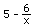
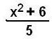

10 ways to solve a quadratic equation
Method 1. By guessing
a number for x. Doing it this way Don first finds out
quickly and makes sure the youngster knows how to square a
number, and how to do 4 - 6 = -2,
and knows the rule for substitution (if you have 2 of the same variables-like the 2
x's- in the one equation), you have to substitute the same number in for both
x's), and the order of operations says we have to multiply 5*x before we subtract
that from x2 below.
Don has had numerous youngsters (age 7 and up), that have done this. Don will
start by saying, try a small number, no negatives, no fractions. Give me a
number..student says "4". Ok let's try that, we'll substitute 4 in for
x in our equation:
x2 - 5x + 6 = 0 { , }
42 -5*4+6=? 0
16 - 20 +6 ?=0
-4 + 6 ?= 0
2 is not =0 So 4 doesn't work
You're close, only 2 away from 0. Try 3? Ok
x2 - 5x + 6 = 0
32 - 5*3 + 6 ?= 0
9 - 15 +6 ? =0
-6 + 6 ? = 0
0 = 0 is true!
So 3 works, it's one of the answers. It turns out there are two answers. Find the other answer. Don will take whatever number the student wants to try, and look at whatever they get and try to get closer to 0! Eventually they try 2? Ok.
x2 - 5x + 6 = 0 { 3, }
22 - 5*2 + 6 ?= 0
4 - 10 +6 ? = 0
-6 + 6 ? = 0
0 = 0 is true! so 2 works also.
The 2 solutions of the quadratic equation x2 - 5x + 6 = 0 are { 3, 2 }. Now Don says to his student.."this is not busy work! There is something going on here.. look at the two answers 3 and 2, and look at the 6 in the equation, how do you get this 6 from the two answers?" Oh, 2*3=6. "And look at these two answers and how to you get the 5 in the equation?" Oh, you add 2+3=5. Don says "Now you have the two secrets to solving these equations. Try these equations below, get the two answers for each. And don't forget the secrets".
x2 - 7x + 10 = 0 { , }
x2 - 8x + 15 = 0 { , }
x2 - 10x + 24 = 0 { , }
x2 - 11x + 24 = 0 { , }
x2 - 25x + 24 = 0 { , }
x2 - (6 1/2) x + 9 = 0 { , }
Check one of the two answers in its equation to make sure you have it right. Now make up a quadratic equation for your Mom and one for your Dad or a friend. A suggestion: make up the two answers first, then you can put the right numbers in the equation. Enjoy!
What power they feel! This is not busy work! There is something going on here!
Method 2. Solving x2 - 5x + 6 = 0 for
x to get x = ,
then iterate this function.
Jonathan, at
age 7, solved this quadratic equation like this:
2a.We can get an infinite continued fraction and
find approximations of the roots of the equation
2b.We'll iterate the function starting with different numbers, then graph the starting
number vs the limit of these infinite sequences.
See a videoclip of Jenny, age 11, do the iterations and make this wonderful, wonderful graph.
[Notice that there are numbers for which there is no sequence, no limit to
graph, but a hole, like when x = 0. Can you find other numbers that that will
make the fraction "blow up" and there will be no sequence and will
make other holes in this graph? Can you find a function for these numbers? Very
interesting!]
2c.Graph 3 successive 'pieces' of the infinite
continued fraction.
Where will the three graphs intersect?
2d.Graph y = , an hyperbola, then connect points whose coordinates are
consecutive input numbers in the sequence, starting with 1, -1,11, 4.4545, 3.653, 3.358,
3.213,... WOW!
|
Computer
programs to iterate the function
|
Mathematica g[x_]:=5-6/x N[NestList[g,1,20],10] (you define the function, it starts with 1-> x, iterates 20 times and gives 10 digits for each number)
|
Basic 10 INPUT X 20 for N=0 to 20 30 X=5-6/X 40 Print X 50 Next N 70 end |
Method 3. Solving x2 - 5x + 6 = 0 for
x to get x = ,
then iterate this function.
|
x2
- 5x+ 6= 0
add 5x to both sides
x2 +
6 = 5x
divide both sides by 5
x =
|
|
Notice that a computer program to iterate the
functions in each of methods # 3, # 4, and # 5 would essentially be the same as for that used for
method #2. You would just change the iterating function from say,
to
.
Method 4. Solving x2 - 5x + 6 = 0 for
x to get x =  then iterate this function and do the
then iterate this function and do the
corresponding things, as in 2a., 2b., 2c. and 2d above.
| 4b.The graph of the starting points or
guess numbers vs the limit of the infinite
sequence formed by iterating
the
function Notice that starting with 3, goes to 3, 5 gives 0 in the denominator so there is no sequence, there is a hole. Every other starting number will give an infinite sequence that goes to 2, except the other numbers that arrive at zero in the deniminator. Can you find these other numbers that will end in a zero in the denominator? |
Method 5. Solving x2 - 5x + 6 = 0 for x to get x = , then iterate this function and do the corresponding things as in 2a., 2b., 2c. and 2d above. You could also iterate the function starting with -20, and see what happens...yes you will get complex numbers, but what will the limit of these sequences be?!!
Method 6. Sheri
solves
x2
- x - 1 = 0 using a calculator to hone in on one of the two solutions
(involves decimals and numbers like -7E-5 on the
calculator).
Method 7. By factoring (one of the 'normal' ways)
Method 8. By completing the square
Method 9. Using the quadratic formula
Method 10. Graph x2 - 5x + 6 =
y (where the graph crosses the x-axis will be the roots, if they are real)
Method 11. Spiraling in to the intersection of 2 curves,
y=1+1/x and y=x from x2-x-1=0
Flash! This just happened (10/26/96): Colleen, a 7th
grader, solved
x2 - x - 1 = 0 and got
x = x2 - 1. Try iterating this. It's exciting when
something unexpected happens! That's what makes my teaching interesting
and enjoyable. I've spent the last 2 hours working on this in
Mathematica. Don't forget to try fractions!
I find this all very exciting! You might find more ways- with diagrams?! Please let Don know if you do.